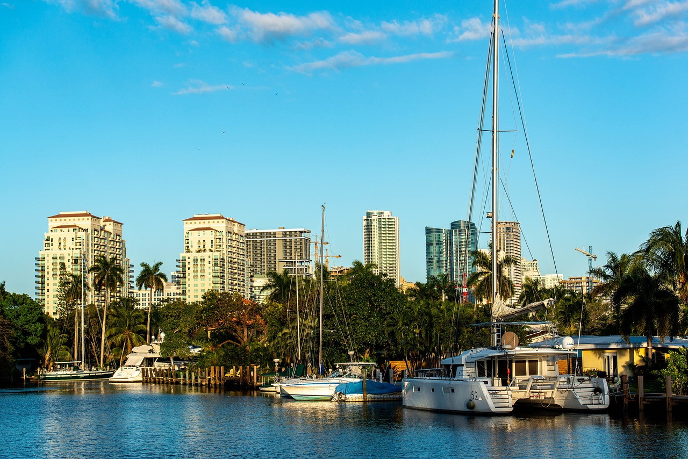
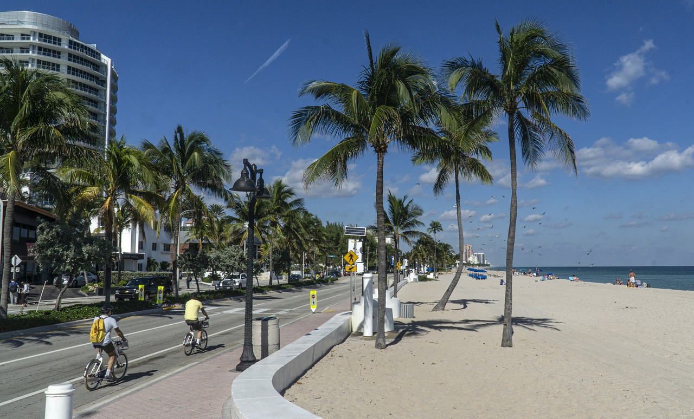

Fort Lauderdale na Floridě je město, které je především o
zábavě na slunci. Se svým celoročním teplým počasím a úžasným pobřežím je to
vysněná destinace pro milovníky pláží. Ať už si chcete odpočinout na písku
nebo se ponořit do vodních sportů, Fort Lauderdale vám pomůže.
Ale není to jen o plážích. Fort Lauderdale má také živou kulturní scénu.
Můžete prozkoumat městské umělecké galerie, podívat se na živá hudební
vystoupení nebo si dopřát lahodnou kuchyni v místních restauracích.
Pokud jste na nakupování, budete rádi, když víte, že Fort Lauderdale nabízí
skvělé možnosti. Od luxusních butiků až po svérázné vintage obchody – každý
si tu něco najde.
A nesmíme zapomenout ani na noční život. Fort Lauderdale má rušnou párty
scénu se spoustou barů a klubů, kde můžete protančit celou noc.
Ať už jste plážový povaleč, umělecký nadšenec, shopaholik nebo zvíře na
párty, Fort Lauderdale má něco pro vás. Je to město, které nabízí dokonalou
kombinaci relaxace a vzrušení.
Copy All. SIMEK:SIMEK

